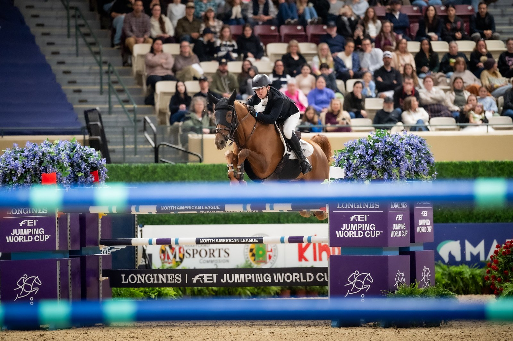

Francois Xavier Boudant gana con Fee de Riverland la 1,45 m del CSI4* de Rouen
El francés Francois Xavier Boudant y Fee de Riverland se impusieron en el Prix de la Metropole Rouen Normandie, prueba de 1,45 m del CSI4* del Equiseine Rouen 2026.

Francois Xavier Boudant firmó el sábado 21 de noviembre la victoria en la prueba principal del CSI4* de Rouen, disputada a 1,45 m bajo el formato Winning Round (art. 223.2). Según la clasificación oficial, el jinete francés completó la prueba sin penalidades (0-0 puntos) con Fee de Riverland y detuvo el crono en 41,23 s.
La segunda plaza fue para Kevin Staut (FRA) con Geisha de Riverland, también con 0-0 puntos y un tiempo de 41,87 s. Completó el podio Eden Leprevost Blinlebreton (FRA) con Fayrouz d'Ouilly, igualmente sin penalidades, en 42,28 s.
Los tres primeros clasificados terminaron sin faltas, de modo que el orden del podio se decidió por el tiempo, con apenas 1,05 s entre el ganador y el tercero.
El Equiseine Rouen 2026, que combina pruebas CSI4*, CSI2* y Amateur, se celebra del 17 al 22 de noviembre.
Todo sobre Equiseine Rouen 2026 →
Por Lucía Valdeolmos